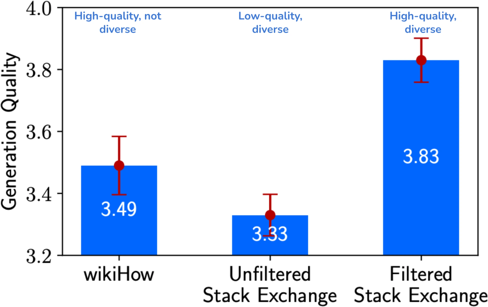
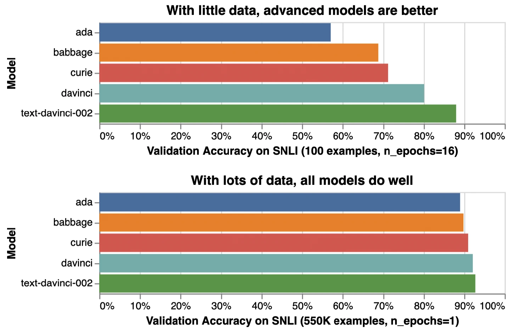
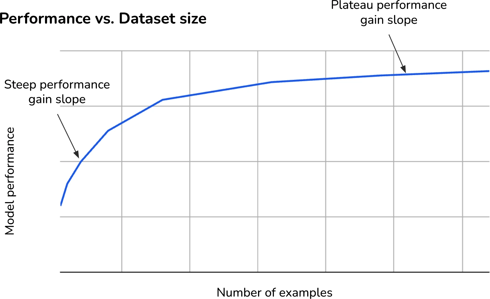
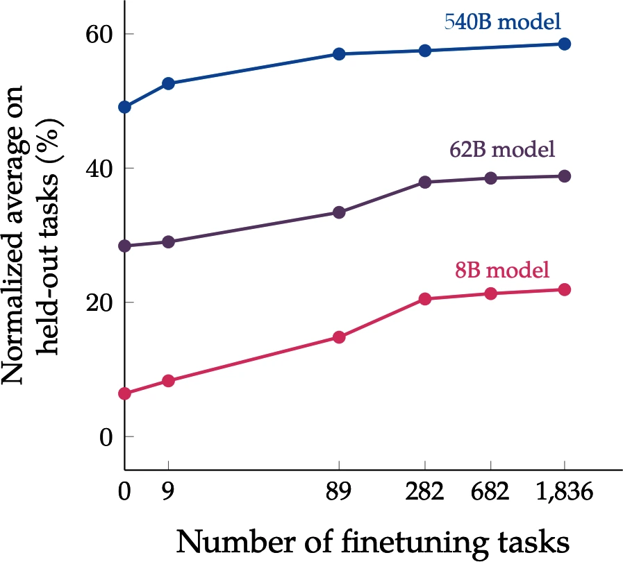
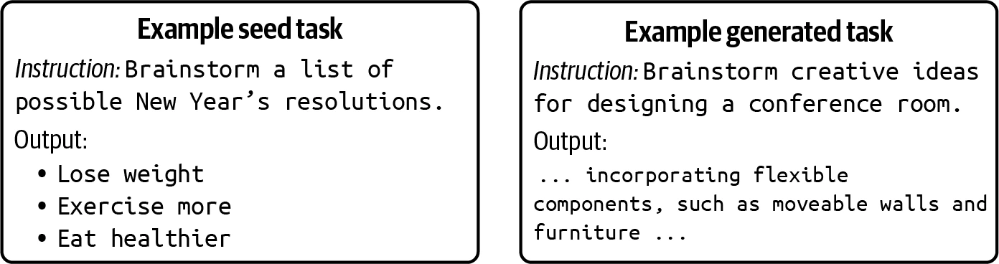
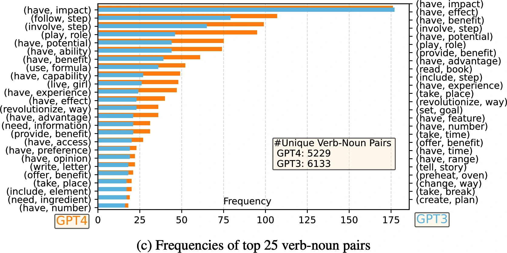
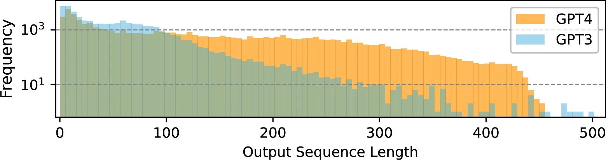

Chapter 8
数据集工程
Dataset Engineering
模型质量始于训练数据
Introduction
模型质量取决于训练数据质量。没有数据，即使拥有世界上最好的 ML 团队和无限算力，也无法微调出好模型。数据集工程的目标，是创建一个能训练出最佳模型的数据集，最好还不超出预算。
能负担从零开发模型的公司越来越少，更多公司转而用数据打造 AI 表现差异。模型需要的数据越来越多，处理数据也更困难，需要更多人才和基础设施投入。
数据工作已经从“有空顺手做”的附属任务，演变成专门岗位。很多 AI 公司如今聘有数据标注员、数据集创建者和数据质量工程师，他们可能嵌入核心工程团队，也可能与其并行协作。
模型生态已经充满选择，数据生态则更加复杂：数据集和技术层出不穷。本章概览数据版图，以及建立自有数据集时需要考虑的问题。
本章先讨论数据整理：需要什么数据、需要多少、什么叫高质量；随后讨论数据合成和处理。整理、生成、处理不是线性流程，实际工作通常要在各步骤之间反复往返。
即使是同一模型，不同训练阶段也要教授不同能力，因此需要具有不同属性的数据。预训练数据量常以词元数衡量，监督微调则常按样例数衡量。但从高层看，它们遵循同一整理原则。本章重点是与应用开发者更相关的后训练数据，同时也会引用对后训练有启发的预训练经验。
有最佳实践和工具能自动化流程的一部分；不过，数据工作大多仍是苦活、眼泪和汗水。
AI 开发越来越重视数据，于是出现了与“以模型为中心”相对的“以数据为中心”：
- 以模型为中心：改进模型本身，包括设计新架构、扩大模型、开发新训练技术。
- 以数据为中心：改进数据，包括开发处理技术、创建高质量数据集，以更少资源训练更好模型。
深度学习早期，很多基准以模型为中心：给定 ImageNet，大家用同一数据集训练尽可能好的模型。近年来更多基准转向数据中心：给定同一模型，大家开发能让该模型表现最好的数据集。
2021 年 Andrew Ng 发起数据中心 AI 竞赛，参赛者用修复错误标签、添加边缘样例、增强数据等手段改进同一基础数据集。
2023 年 DataComp（Gadre 等，2023）举办竞赛，目标是创建训练 CLIP（Radford 等，2021）的最佳数据集。标准脚本在每份提交数据上训练 CLIP，再按模型在 38 个下游任务上的表现评价数据集。2024 年又举办类似竞赛，评价用于 4.12 亿到 70 亿参数语言模型的数据集（Li 等，2024）。类似基准还有 DataPerf 与 dcbench。
模型中心与数据中心的划分有助于指导研究；现实中的重大进步通常需要同时投资模型和数据。
数据整理
Data Curation
并非所有 AI 问题都能靠数据解决，但数据通常是解决方案的关键。正确的数据能让模型更有能力、更安全、处理更长上下文；糟糕数据则会加重偏差和幻觉。数据错误既伤害模型，又浪费资源。
数据整理是一门科学，需要理解模型怎样学习、有哪些资源可帮助它学习。数据集建设者应与应用和模型开发者紧密协作。小团队中可能是同一人：负责训练模型的人也负责获取数据；数据需求高的组织则常设置专门岗位。
需要什么数据取决于任务和想教给模型的内容：
- 自监督微调需要数据序列；
- 指令微调需要“（指令，回答）”格式；
- 偏好微调需要“（指令，胜出回答，落败回答）”格式；
- 训练奖励模型可以沿用偏好格式，也可采用“（（指令，回答），分数）”格式。
训练数据应体现希望模型学会的行为。高质量标注一直很难获得；若要教思维链推理和工具使用等复杂行为，难度更高。
思维链
第 5 章提到，CoT 提示推动模型逐步解决问题再给最终答案。要教模型生成逐步回答，训练数据就要包含 CoT 回答。Chun 等人（2024）显示，在微调数据中加入逐步回答，能显著提高不同规模模型的 CoT 表现，某些任务准确率几乎翻倍。
多步骤回答枯燥且耗时：逐步解释数学题远比只给答案困难。下面两个例子来自该研究：
指令：请回答问题：氮的沸点是多少？
回答（无 CoT）：−320.4°F
CoT 指令：逐步推理后回答。食堂原有 23 个苹果，
午餐用了 20 个，又买了 6 个，现在有几个？
回答（有 CoT）：食堂原有 23 个。午餐用了 20 个，
还剩 23 − 20 = 3 个。又买了 6 个，所以共有 3 + 6 = 9 个。因此，CoT 数据集比一般指令数据集少见。
工具使用
模型预训练时获得海量知识，可能直觉上已经知道怎样使用部分工具；展示工具使用示例仍能改善能力。常见做法是让领域专家创建工具数据：每个提示是一项必须用工具的任务，回答是完成任务所需动作。例如训练个人助理模型，可以请职业助理说明日常任务、执行方式和所需工具。人类解释过程时可能因记忆偏差或认为某些步骤不重要而漏掉，因此往往必须观察真人操作。
但对人高效的方法不一定对 AI 高效，反之亦然。人可能偏爱 Web 界面，模型却更容易调用 API；人搜索时打开浏览器、粘贴查询、逐个点击结果，模型可以直接请求搜索 API，一次处理全部结果。因此，很多团队依赖模拟等合成技术生成工具数据。
工具数据还可能需要特殊格式。一般对话中，用户与 AI 轮流说话，每轮一条消息；工具使用时，AI 一轮里可能生成多条消息，分别发到不同位置，例如一条发给代码解释器，一条告知用户当前动作。Llama 3 作者为此设计多消息聊天格式，用消息头声明来源和目的地，用特殊终止词元标记人类与 AI 回合开始。
为对话界面整理数据时，还要决定需要单轮、多轮还是两者都要。单轮数据训练模型回应独立指令；多轮数据训练模型解决需要来回互动的现实任务。模型可能先澄清用户意图，再处理任务；用户又可能在回答后补充信息或纠正。单轮简单、易获得，多轮往往需要专门设计情景或更深入互动。
数据整理不只创建新数据、教授新行为，也包括删除旧数据、让模型忘掉坏行为。假设 ChatGPT 式聊天机器人显得傲慢、浪费用户词元：用户只要求核查一句话是否正确，它却说“陈述正确，但风格可以改进”，再擅自改写全文。
检查后发现训练数据里有多个主动给建议的标注样例，于是应删除它们，并获取只做事实核查、不擅自改写的新样例。
不同应用需要不同特征，不同训练阶段也需要不同数据混合。不过从高层看，数据整理围绕三项标准：质量、覆盖度、数量。若训练像烹饪，数据就是食材：质量是食材是否新鲜，覆盖度是配比是否正确，数量则是食材够不够。
数据质量
Data Quality
少量高质量数据能胜过大量不相关、不一致的噪声数据。Yi 模型团队发现，精心编写的 1 万条指令优于数十万噪声指令（Young 等，2024）。
《LIMA: Less Is More for Alignment》（Zhou 等，2023）也显示，一个 650 亿参数 Llama 只用 1,000 条精心筛选的提示和回答微调，就有 43% 的回答被人工评为等同或优于 GPT-4。不过数据太少也有缺点：LIMA 不如产品级模型稳健。
Llama 3 团队得到相同结论。他们还发现，人工数据更容易出现错误和不一致，特别是细致安全政策，因此开发了 AI 辅助标注工具保证质量。
大家都知道质量重要，但高质量究竟是什么？简短答案是：能帮助你高效、可靠完成工作的数据。具体定义因人而异。一般可看六项特征：
相关
训练样例应与任务相关。回答今天法律问题时，19 世纪法律数据可能无关；研究 19 世纪法律制度时，它又高度相关。
符合任务要求
标注应对应任务要求。任务要求事实一致，标注就必须事实正确；要求创意，标注就应有创意；要求分数和理由，两者都要提供；要求简洁，标注也要简洁。这里用“符合”而非“准确”，因为准确回答未必就是某些任务的用户所需。
一致
样例和标注者之间应一致。两个标注者处理同一例子，不应差别太大；作文都得 3 分时，质量是否相当？不一致会让模型困惑、更难学习。完善的标注指南是兼顾任务要求与一致性的关键。
格式正确
全部样例应遵循模型预期格式。多余格式词元会干扰学习，应删除。例如抓取产品评论后，应清除 HTML 标签。还要注意行尾空格、换行、大小写和数值格式不一致。
足够唯一
训练数据中的重复会引入偏差和污染。说“足够唯一”，是因为不同用例可容忍的重复程度不同。
合规
数据必须符合所有内部外部政策，包括法律法规。例如不允许用 PII 训练时，数据中就不能含 PII。
创建数据前，应明确这六项在自身场景中的具体含义。本章技术都以产生这些特征为目标。
数据覆盖度
Data Coverage
训练数据应覆盖预计模型解决的问题范围。真实用户问题广泛，表达方式也千差万别。捕捉多样使用模式，是模型表现良好的关键；覆盖度需要足够的数据多样性，所以很多人直接把它叫数据多样性。
有些用户写带大量参考资料的详细指令，另一些只写短句，微调数据就应两者都有。用户查询常有错字，就加入错字示例；应用支持多种编程语言，就覆盖用户关心的语言。
不同应用的多样性维度不同。法译英工具不需要语言多样性，但可能需要主题、长度和说话风格多样；向全球客户推荐商品的机器人未必需要领域多样性，却很重视语言与文化多样性。
通用聊天机器人需要覆盖广泛主题和表达模式。Ding 等人（2023）认为，提高聊天语言模型最直接的方式，是提高训练数据质量和多样性。NVIDIA 开发 Nemotron 时关注任务、主题、指令多样性：不同输出格式和长度、开放回答与是非回答。Shen 等人（2024）也提醒，某些情况下加入更多异质数据反而让表现变差。
Meta 表示 Llama 3 架构与旧版差异不大，性能提升主要来自更好的质量、多样性和更大训练规模。Llama 3 论文详细说明预训练、监督微调和偏好微调三个阶段的覆盖度。
三阶段共同的多样性轴是领域，但“多样”的具体含义不同，如表 8-1。表中只有高层领域，不含数学下的几何等细粒度主题。后训练还有其他维度，例如上下文/回答词元数、轮次数，以及人工数据与 AI 数据比例。
| 领域 | 预训练 | 监督微调 | 偏好微调 |
|---|---|---|---|
| 通用知识（英语） | 50% | 52.66% | 81.99% |
| 数学与推理 | 25% | 21.19% | 5.89% |
| 编程 | 17% | 14.89% | 6.93% |
| 多语言 | 8% | 3.01% | 5.19% |
| 考试式内容 | — | 8.14% | — |
| 长上下文 | — | 0.11% | — |
表 8-1 Llama 3 不同训练阶段有不同的最优领域配比。
预训练和监督微调中，数学、推理、代码合计占训练数据近一半，远高于作者猜测的互联网自然比例。Llama 3 作者发现，在退火阶段逐渐降低学习率、逐渐增加少量高质量代码与数学数据，可提升关键基准表现。这印证常见看法：高质量代码和数学数据比自然语言更能提升推理。
偏好微调中代码与数学合计只有 12.82%，可能因为其目标是反映用户偏好的真实分布。
怎样决定正确配比？简单方法是反映真实应用用量，也可通过实验找最优值。Meta 做了类似缩放定律的实验：对每个候选配比，训练数个小模型，再预测大模型采用该配比时的表现，最终选出实验推导的最佳猜测。
Zhou 等人（2023）为了评估质量和多样性，用三个同为 2,000 样例的数据集分别微调同一个 70 亿参数模型：第一组高质量但不多样，第二组多样但低质量，第三组既多样又高质量。图 8-1 展示三种模型的生成质量。

数据数量
Data Quantity
问需要多少数据，就像问需要多少钱：答案因情境而异。一个极端是 Jeremy Howard 和 Jonathan Whitaker 用有趣实验表明 LLM 能从一个例子学习；另一个极端是有些团队用数百万例子微调。
数百万听起来很多，与从零训练基础模型相比却很少。Llama 2 与 Llama 3 分别使用 2 万亿和 16 万亿词元；原书换算为约 10 亿和 150 亿个样例。
如果已有数百万样例，可以也应该评估从零训练是否会改善表现。基于预训练模型微调通常更高效，但数据很多时有时会更差，原因是固化：预训练会把权重“冻住”，使它们难以适应微调数据（Hernandez 等，2021）。小模型比大模型更容易固化。
除质量和多样性外，还有三项因素影响所需数据量：
微调技术
全量微调承诺最佳表现，却比 LoRA 等 PEFT 方法需要多几个数量级的数据。拥有数万到数百万“（指令，回答）”时可尝试全量微调；只有几百到几千例时，PEFT 可能更好。
任务复杂度
产品评论正负分类等简单任务，所需数据远少于针对财务申报文件的问答。
基础模型表现
基础模型越接近目标，达到目标所需示例越少。假定大模型更好，微调大模型可能需要更少样例。这与预训练相反：预训练的大模型需要更多数据。
OpenAI 微调指南显示，只有 100 例时，更先进模型微调后表现更好，可能因为开箱表现本来就强；用 55 万例微调后，实验中五个模型表现相近，如图 8-2。

简而言之，数据少时可在先进模型上用 PEFT；数据多时可对较小模型做全量微调。
投资大型数据集前，先用约 50 条精心设计的小数据集，看微调是否改善模型。若已经达到目标很好；若明显改善，更多数据通常还能继续提升；若毫无改善，大数据集往往也救不了。
但不要过早断定小数据微调无效。超参数（学习率过高或过低）、数据质量、提示写法等都会影响结果。绝大多数情况下，50～100 例微调后应能看到改善。
- 自监督 → 监督：法律问答对很少、法律文档很多时，先在文档上自监督微调，再用问答对继续微调。
- 弱相关 → 相关：产品评论情感数据少、推文情感数据多时，先学推文情感，再学产品评论。
- 合成 → 真实：医疗数据因敏感而有限时，先用 AI 合成大量病例微调，再用真实数据继续微调。这个方法难做好，需要协调两次不同训练；操作不当可能花更多算力却得到更差模型。
小数据实验还能估计还需多少数据。分别用当前数据的 25%、50%、100% 微调，绘制表现随大小变化的曲线。斜率陡说明数据翻倍会显著提升；平台期则说明翻倍只有小收益，见图 8-3。

图 8-3 的形状很典型：训练样例通常边际收益递减。前 1,000 例也许提高准确率 10 个百分点，再加 1,000 例可能只提高 5 个百分点。
数据更多一般会改善微调表现，但多样性同样重要。Chung 等人（2022）显示，微调任务数从 9 增至 282 时表现显著提高；超过 282 后趋于平台，但增至 1,836 时仍有小幅正向收益，如图 8-4。模型从接触多样任务中获益很大。
多样性可以体现在任务类型（摘要、问答）、主题（时尚、金融、科技）和输出格式（JSON、是非回答）等方面。

微调数据量不仅由需要决定，也由预算决定。标注预算 1 万美元、每例 2 美元，最多得到 5,000 例；还要平衡数据与算力预算，数据花得越多，留给算力的越少，反之亦然。
数据获取与标注
Data Acquisition and Annotation
数据获取的目标，是在尊重用户隐私并遵守法规的前提下，产生足够大、具备所需质量和多样性的数据集。途径包括获取公开数据、购买专有数据、标注和合成。怎样在给定预算下获得满足具体要求的数据集，已成为小众但不断成长的研究领域。
最重要的数据源通常是自有应用。如果能建立数据飞轮，利用用户产生的数据持续改进产品，就会获得巨大优势。应用数据和任务完全相关、完全对齐，也就是与真正关心的数据分布一致；其他来源很难做到。用户数据可以是用户内容、使用过程中系统生成的数据或用户反馈。第 10 章讨论反馈系统设计。
投资自建数据前先检查已有数据。数据市场庞大，既有开源也有专有数据；幸运时恰好能找到所需，但更多时候要混合搭配。一个数据集可由多来源、多渠道构成。创建“（指令，回答）”数据集的流程可能是：
- 寻找具备所需特征的已有数据集，得到一个含 10,000 例的候选集；
- 删除低质量指令，剩 9,000 例；
- 把回答质量低的 3,000 例单独留下，剩 6,000 个高质量指令与回答；
- 人工为那 3,000 条高质量指令重写回答，恢复到 9,000 个高质量样例；
- 发现主题 X 数据不足，人工创建 100 个相关指令模板，再让 AI 合成 2,000 条指令；
- 人工标注 2,000 条合成指令，最终共 11,000 例。
这当然极度简化了真实整理流程。现实中可能发现大量标注无用，不得不更新指南、重新标注；也可能发现事实错误，要再聘标注者复核；或发现每个模板生成 100 条会损害多样性，必须增加模板、减少每模板样例。如此循环。
可以利用已有数据，但绝不能完全信任，必须彻底检查验证。使用前始终核对许可证并尽量理解来源；即使数据集许可证允许商用，其中一部分仍可能来自不允许商用的来源。
- Hugging Face、Kaggle 各托管数十万个数据集；
- Google Dataset Search 很优秀，却常被低估；
- 政府是优质开放数据提供者：Data.gov 有数十万数据集，data.gov.in 有数万；
- University of Michigan ICPSR 保存数万项社会研究的数据；
- UC Irvine Machine Learning Repository 与 OpenML 各有数千数据集；
- Open Data Network 可搜索数万个数据集；
- 云供应商常托管少量开放数据，最著名的是 AWS Open Data；
- ML 框架通常提供小型内置数据集，如 TensorFlow Datasets；
- 评估工具可能托管足以做 PEFT 的基准数据，例如 EleutherAI lm-evaluation-harness 有 400 多个基准，平均每个 2,000 多例；
- Stanford Large Network Dataset Collection 是优秀图数据仓库。
微调经常需要自行标注。难点不只在标注过程，还在清晰指南的制定：必须明确好回答是什么、为什么好；回答能否正确却没用？3 分与 4 分差在哪？人工标注和 AI 标注都需要指南。
LinkedIn 等团队报告，标注指南是 AI 工程流水线最难的部分之一。人们常因耗时耗力，在中途放弃认真标注，希望模型自行弄清正确回答。强模型偶尔确实能做到，但对许多应用，依赖它自己猜风险太大。
好消息是，标注指南与第 4 章的评估数据指南相同。这也是应该加大投入整理评估指南和数据的理由。运气好时，评估样例还可增强，或用作合成新数据的种子。
数据增强与合成
Data Augmentation and Synthesis
与算力和人才一起，数据是 AI 最难的挑战。行业长期目标是以程序化方式生成数据，常用两种过程：
- 数据增强：从已有真实数据创建新数据。例如把一张真实猫图翻转，得到同一只猫的新图。
- 数据合成：生成模拟真实数据属性的数据。例如模拟鼠标在网页上的运动，产生机器人鼠标轨迹。
换言之，增强数据派生自真实数据，合成数据本身不是真实数据。但两者都自动创建数据，所以术语有时混用。本章也常用“数据合成”统称两者。
人工生成数据在软件工程中历史悠久，最初用于生成测试假数据。Faker、Chance 等库能生成姓名、地址、电话、邮箱等简单格式。若开发收货地址解析程序，可生成不同国家、州和格式的地址，验证程序是否全都能解析。
AI 已能生成与人类数据难以区分的内容，于是可合成医生笔记、合同、财务报表、商品描述、图像、视频广告等复杂数据。这降低了生成难度，也打开了更多用例。
合成数据虽然大幅减轻人工数据压力，却不会完全替代人工数据。很多用例中，混合人工与 AI 数据价值最高。
为什么合成数据
Why Data Synthesis
合成数据很有吸引力，可以改善数量、覆盖度、质量“黄金三角”，还可减轻隐私问题并蒸馏模型。
增加数据数量
最大理由是能够规模化生产，承诺为训练和测试提供丰富数据。理论上更多数据帮助模型泛化到更广任务，尤其适合真实数据稀少或难以获取的场景，例如罕见天气、深海探索、自驾事故。
增加覆盖度
可以生成具有目标特征的数据，以改善表现或教出具体行为：极短/极长文本，供毒性检测器使用的有毒对话，或在现实数据有毒时合成安全数据。还常用 AI 生成对抗样例，或生成稀有类别以处理类别不平衡。
Gekhman 等人（2022）的 TrueTeacher 用 LLM 生成事实不一致摘要，再训练模型检测事实不一致。Anthropic 的 Perez 等人（2022）讨论多种合成技术，为 154 种 AI 行为建立测试集，包括人格、政治观点、伦理立场、社会偏见。成对比较中，语言模型生成的数据集接近人工质量，有时甚至超过。
提高数据质量
人们通常认为合成数据质量低，但有时相反。人类的根本局限可能让人工数据更差，例如前述工具使用：人和 AI 操作模式、工具偏好不同；复杂数学题上，AI 还能生成远超普通人类专家构想的题目。
有些团队也偏爱 AI 生成偏好数据。单个人的偏好或许相对一致，不同人之间却差异巨大，还受情绪和动机影响；AI 生成的偏好评分反而更一致、更可靠。
减轻隐私担忧
因隐私无法使用人工数据的场景，合成往往是唯一选择。医疗法规使真实病历很难用于训练，可以生成不含敏感信息的合成病历；保险可用合成索赔替代包含个人和财务信息的真实索赔。
蒸馏模型
有时希望训练一个模型模仿另一个模型，常见目标是得到更便宜或更快、表现接近原模型的蒸馏模型。做法是用原模型生成的数据训练它。
这只是人们转向数据合成的五项理由。由于吸引力明确，越来越多模型使用合成数据，合成技术也不断发展。
传统数据合成技术
Traditional Data Synthesis Techniques
数据合成不是 AI 独有，在软件测试、游戏、机器人中历史悠久。用算法生成数据也叫程序化生成，与手工生成相对。游戏常即时生成关卡、地图、物品和角色，这些技术大多也适用于 AI。
传统方法主要有规则和模拟；先进 AI 又使“用 AI 自身合成数据”成为新方法。先快速看两类传统技术。
基于规则的数据合成
Rule-Based Data Synthesis
最简单的方法是预定义规则和模板。例如创建信用卡交易时，先写模板，再用 Faker 等随机生成器填充字段：
交易 ID：[唯一标识]
日期：[MM/DD/YYYY]
时间：[HH:MM:SS]
金额：[交易金额]
商户名称：[商户/商店名称]
商户类别：[类别代码]
地点：[城市、州、国家]
支付方式：[信用卡/借记卡/现金/在线]
状态：[已完成/待处理/失败]
描述：[交易描述]交易数据敏感，很多欺诈检测模型先用模板产生的合成交易证明可行性，再获得真实数据权限。
模板常用于生成具有固定结构的发票、简历、税表、银行对账单、活动日程、产品目录、合同、配置文件，也可生成遵循特定语法的正则表达式和数学方程。DeepMind 用 1 亿个合成样例训练奥赛级几何模型 AlphaGeometry（Trinh 等，2024）。
还可对真实数据施加简单变换。图像可随机旋转、裁剪、缩放、擦除；翻转的猫仍是猫，稍微裁剪的足球赛仍是足球赛。AlexNet 经典论文用这种方式增强 ImageNet。
文本可随机用近义词替换，前提是不改变含义或情感。“She’s a fantastic nurse”可变成“She’s a great nurse”。
这种方法还能减轻偏差。担心“nurse”与女性、“doctor”与男性关联时，可以把“she”换成“he”等反向性别词，见表 8-2。
| 原始数据 | 增强数据 |
|---|---|
| She’s a fantastic nurse. | He’s a fantastic nurse. |
| She’s a fantastic doctor. | He’s a fantastic doctor. |
| The CEO, Mr. Alex Wang, … | The CEO, Ms. Alexa Wang, … |
| Today, my mom made a casserole. | Today, my dad made a casserole. |
| Emily has always loved the violin. | Mohammed has always loved the violin. |
表 8-2 数据增强可以帮助减轻数据中的某些偏差。
可从近义词词典找相似词，也可在词嵌入空间寻找距离近的词。还可让 AI 改写或翻译，超越简单替换。
一种有趣变换是扰动：向现有数据加噪声生成新数据。研究者最初发现，轻微扰动能诱骗模型误分类。例如在船图上加白噪声可能被判成汽车。Su 等人（2017）的“One Pixel Attack”只改一个像素，就让 Kaggle CIFAR-10 中 67.97% 的自然图像、ImageNet 中 16.04% 的测试图像误分类。这若被利用会造成严重风险：攻击者可让身份识别系统把自己当授权员工，或让自驾车把分隔带当车道。
用扰动数据训练既能改善表现，也能增强抗攻击稳健性。Hendrycks 与 Dietterich 2019 年通过亮度变化、加雪、改变对比度、加噪等 15 种视觉腐蚀创建 ImageNet-C 与 ImageNet-P。
文本也能扰动。BERT 训练时把 1.5% 的词元替换成随机词，带来小幅提升。视觉数据还能用更复杂算法增强：Snap（2022）为角色合成不同肤色、体型、发型、衣着、表情，以创建未覆盖的边缘案例并减轻隐性偏差，再用这些资产训练模型。
模拟
Simulation
现实实验昂贵或危险时，可以在虚拟环境模拟。测试自驾车遇到高速公路上的马，不能真把马放上路；应在模拟器中进行。自驾模拟引擎包括 CARLA、Waymo SimulationCity 和 Tesla 的旧金山模拟。
机器人训练也常用模拟。训练机器人倒咖啡，却不知道各关节怎样运动，可以模拟不同动作，只保留成功倒出咖啡的场景。
模拟能以很低成本运行大量实验，避免事故和物理损坏。模拟里成功的机器人未必现实可用，但模拟中失败的现实中大概率也失败。再复杂的模拟仍是现实简化；Sim2Real 子领域专门研究把模拟训练算法适配到现实。
模拟还常用于教模型使用工具。人工动作未必对 AI 最优，模拟可以发现人类忽略的行动。给定查询，模拟不同动作序列、执行并验证结果，再把最高效序列作为标注回答。
模拟对稀有事件尤其有价值。金融可模拟公司成功上市或重大破产，研究市场影响；制造业可模拟材料或装配缺陷，训练异常检测和质控模型；气候科学家可模拟地球系统，创建温度、降水、极端天气的变化，让 AI 学习更广泛的未来。
规则与模拟方法已服务很多场景，但直到 AI 能生成逼真、高质量数据，合成才真正爆发。
AI 驱动的数据合成
AI-Powered Data Synthesis
人类生成数据的方式近乎无限，AI 也一样。本节技术并不穷尽所有方法，但足以提供概览。
强大 AI 为模拟打开新可能。AI 可以模拟任意程序输出。StableToolBench（Guo 等，2024）展示怎样不真正调用 API，就用 AI 模拟 API。若要训练模型与一组 API 交互，实际调用也许昂贵或缓慢，可让 AI 模拟预期结果。
AI 还能模拟人类。例如训练国际象棋机器人，人类一局太慢，AI 对局快得多。OpenAI 为训练 Dota 2 机器人使用模拟器，让它每天完成相当于约 180 年的游戏。机器人通过与自己对弈的自我博弈学习，逐步发展和改进策略（OpenAI，2019）。DeepMind 也用自我博弈收集数百万盘围棋数据训练 AlphaGo。
自我博弈不只适合游戏，也适合通用智能体。可以让多个 AI 用不同策略彼此谈判，判断哪种更好；或让一个版本扮演遇到问题的客户，另一个扮演客服。
AI 的改写与翻译能力可增强现有数据。查询“How to reset my password?”可以改写成：
- “I forgot my password.”
- “How can I change my password?”
- “Steps to reset passwords.”
Yu 等人（2023）以不同方式改写 MATH 与 GSM-8K 的 15,000 个样例，创建近 40 万例的 MetaMath；在新数据上训练的模型在相关数学基准上超过更大模型。
还常把资源丰富语言的数据翻译成低资源语言，帮助训练克丘亚语、老挝语等小语种专用模型。
翻译质量可用回译验证。原英文句子是 X，老挝语译文是 Y；另一个模型把 Y 译回英文 X′，再比较 X′ 与 X。差别很大就说明 Y 可能很差。
AI 不只翻译自然语言，也能翻译编程语言。Llama 3 作者把 SFT 数据中的代码翻译成更多语言。实际上，Llama 3 训练高度依赖合成数据，并使用了许多创造性方法。
例如用回译生成代码解释和文档：从代码片段出发，让 AI 生成解释与文档，再根据解释和文档生成代码；只有当新代码忠实于原代码时，才把解释和文档用于微调。
AI 可以为预训练和后训练生成数据，但后训练会有意使用更多合成数据。可能原因是预训练旨在增加知识；AI 能把已有知识改成不同格式，却更难合成真正的新知识。
不过互联网正被 AI 内容淹没，依赖互联网的模型很可能已经在合成数据上预训练。也有专门合成数据集，例如 Cosmopedia（Allal 等，2024）：由 Mixtral-8x7B-Instruct-v0.1 生成的 250 亿词元教科书、博客、故事、帖子和 WikiHow 文章。
后训练数据——指令数据与偏好数据——通常最费力，因此更常合成。让 AI 从多个回答中选更好的相对直接，第 3 章已讨论。主要挑战是模型偏差，例如首位偏差。NVIDIA 研究者把回答顺序交换，让评委判断两次；只有两次选择同一胜者，才保留“（提示，胜者，败者）”三元组（NVIDIA，2024）。
指令数据合成
Instruction Data Synthesis
指令微调的每个样例包含一条指令和一个回答。AI 可以合成指令、回答或两者。可以由 AI 生成指令、人工写回答，也可以人工写指令、AI 生成回答。
- 生成指令：先列出希望覆盖的主题、关键词或指令类型，再为每项生成若干指令；也可从模板集合出发，每模板生成若干样例。主题清单和模板本身也可由 AI 生成。
- 生成回答：每条指令可生成一个或多个回答。
为创建多轮对话数据集 UltraChat（Ding 等，2023），作者先让 ChatGPT 为科技、饮食、时尚、自然、教育、金融、旅行等日常方面生成 30 个主题，每主题再生成 30～50 个子主题，随后继续用同一模型生成相应指令与回答。
Stanford 训练 Alpaca（Taori 等，2023）时，从 Self-Instruct 种子数据的 175 个“（指令，回答）”开始。这些人工种子覆盖多样有趣用例，再用 GPT-3 模型 text-davinci-003 模仿种子生成 52,000 对，如图 8-5。

还有很多创造性方式合成具有指定特征的数据。人类写长内容比短内容难，AI 生成高质量长回答也比短指令难；回答越长，幻觉机会越多。可以反过来使用人工长回答与 AI 指令。Köksal 等人、Li 等人、Chen 等人采用逆向指令：从故事、书籍、维基百科文章等高质量长内容出发，让 AI 生成能够引出这些内容的提示。这样可避免回答中的 AI 幻觉，得到更高质量指令数据。
理论上可以在不增加人工标注的情况下，用逆向指令持续强化模型。Li 等人（2023）的流程：
- 从少量种子样例开始训练弱模型；
- 让弱模型为已有高质量内容生成指令，创建高质量指令数据；
- 用新数据微调弱模型；
- 重复直到达到目标表现。
还可用合成数据微调长上下文能力。若当前模型最多处理 8K，希望扩到 128K：
- 把长文档切成不足 8K 的短块；
- 为每个短块生成若干“（问题，答案）”对；
- 训练每个问答时，把可能超过 8K、但短于目标长度的原始长文档作为上下文，让模型学会利用扩展上下文回答。
Llama 3 论文细节丰富，是指令合成的优秀案例。代码翻译与代码回译都从已有代码产生更多数据；作者也让 AI 从零生成编程指令：
- 生成覆盖多样主题的大量编程问题描述；
- 给定问题和编程语言生成解答。加入优秀编程通则与 CoT 推理可改善回答。
为保证质量，他们使用严格的正确性分析与纠错流水线：
- 把代码交给解析器和 linter，捕捉缺失导入、变量未初始化等语法问题；
- 用单元测试捕捉运行时错误；有趣的是，单元测试也由 AI 生成；
- 若任一步失败，把原问题、错误解答、解析器/linter/测试反馈放进提示，让模型修订。只有通过全部检查的样例才进入最终 SFT 数据。
三种方法——代码翻译、回译和生成——组合后的 Llama 3 流水线：
- AI 生成问题描述；
- AI 用多种编程语言生成每题解答；
- AI 生成单元测试；
- AI 修复合成代码错误；
- AI 把代码翻译到其他语言，滤掉不能通过测试的译码；
- AI 生成代码解释和文档等对话，滤掉不能通过回译验证的内容。
借助这套流水线，Dubey 等人生成了超过 270 万个编程相关合成样例，用于 Llama 3.1 监督微调。
数据验证
Data Verification
数据质量对模型表现至关重要，必须有方法验证。AI 生成数据可以像其他 AI 输出一样，用功能正确性与 AI 评委衡量。虽然本节聚焦合成数据，大多数技术也适用于一般训练数据。
第 4 章讲评估驱动开发：公司更容易创建自己能评估的应用。同理，人们也倾向合成自己能验证的数据。编程之所以是热门基础模型用例，一项原因是可以做功能评估；同样，编程样例也是最常合成的数据。Llama 3 的大多数合成训练数据都与代码相关，三种合成方法都能通过代码执行与回译做程序化验证。
无法用功能正确性验证时，常用 AI 验证器：通用 AI 评委或专用评分器。最简单地给每例打 1～5 分，或分成好/坏；也可把质量要求描述给基础模型，让它判断是否符合。如果关心事实一致性，可用第 4 章方法滤掉可能含幻觉的样例。
还可以发挥创意。若合成数据要模仿真实数据，可看区分两者有多难：训练 AI 内容检测器，如果很容易分辨，合成数据就不好。若希望像高质量学术论文，可训练分类器预测论文是否会被 NeurIPS 等顶级会议录用，删除明显会被拒稿的内容。
还可以让模型检测每例主题，删除与任务无关的主题；若预期数据遵循相似模式，可用异常检测找离群点，离群样例可能质量低。
合成数据也能用启发式过滤。一般删除空样例和对应用而言太短的样例；太长则截断或删除。还可按关键词、用户/作者、创建日期、元数据或来源过滤。Self-Instruct 作者采用的启发式包括：
- 重复样例；
- 过长或过短的指令；
- 指令相同、回答不同的样例；
- 输出只是重复输入的样例。
即使技术很多，合成数据评估仍然很难。和其他 AI 应用一样，终极质量测试是现实表现：能否改善模型。对很多模型，合成数据已经通过这项测试。
AI 生成数据的局限
Limitations to AI-Generated Data
合成数据越来越有用，让人憧憬彻底不再担心人工标注。但它即使继续变重要，也可能永远无法完全取代人工数据。四项主要原因是质量差异、模仿局限、潜在模型坍塌，以及数据血缘被掩盖。
质量控制
AI 数据可能质量低，“垃圾进，垃圾出”。无法验证质量时，人们会犹豫使用。开发可靠的数据评估方法和指标，是扩大合成数据价值的关键。
表面模仿
Gudibande 等人的《The False Promise of Imitating Proprietary LLMs》（2023）警告，模仿得到的表现可能很表面：学生模型善于模仿教师风格，却在事实准确性和训练数据以外任务的泛化上挣扎。
更糟的是，模仿会迫使学生模型幻觉。教师能解复杂数学题，所以回答看起来像完整解法；学生即使没有解题能力，在这些答案上训练后也会学会生成“像解法”的文本。研究者建议，要提高推理能力，应改善基础模型质量。
潜在模型坍塌
模型能在多少 AI 数据上训练仍不明确。一些研究表明，递归使用生成数据会给模型造成不可逆缺陷，随时间降低表现。Shumailov 等人（2023）把它命名为模型坍塌，并在 VAE、高斯混合模型、LLM 中演示；预训练和后训练都可能发生。
一种解释是，AI 更常生成高概率事件（没有癌症），较少生成低概率事件（患癌）。多轮后，常见事件过度代表，罕见事件代表不足，模型越来越只输出常见事件并忘掉稀有情况。
Gerstgrasser 等人的《Is Model Collapse Inevitable?》（2024）认为，全合成训练集一定会坍塌，但混合真实数据可以避免；其他研究也得到类似结果。不过都没有给出合成与真实数据比例的明确建议。
也有人用大量合成数据成功改善模型。Li 等人（2024）表明，数学微调 Llama 2-7B 时，合成数据几乎与真实数据一样有效，扩大到约 100 万例也没有明显饱和。Nemotron-4 340B-Instruct 在指令和偏好微调中使用 98% 合成数据。但这些实验都只做了一代模型，不能证明递归训练长期安全。
AI 数据还会延续偏差。Taori 与 Hashimoto（2023）表明，若训练集包含旧模型输出，原模型偏差会被放大；模型输出越忠实于原训练分布特征，反馈循环越稳定，偏差放大风险越小。
数据血缘不透明
AI 生成会掩盖数据血缘。模型受训练数据影响，有时在用户不知情时复述。若用模型 X 生成数据训练自有模型，而 X 的训练数据侵犯版权，自有模型也可能侵权。
又假设用基准 B 评估得到很强结果，但 X 也在 B 上训练过，那么 B 已污染。没有清晰血缘，就很难评估模型商业可用性或信任表现。
讨论完生成、评估和局限后，下面进入一种合成数据不只是补充、而是必需的特殊用例：模型蒸馏。
模型蒸馏
Model Distillation
模型蒸馏（知识蒸馏）让小模型“学生”模仿大模型“教师”（Hinton 等，2015），把大模型知识蒸馏进小模型。
传统目标是产生更适合部署的小模型。大模型部署耗资源，蒸馏可得到更小、更快、表现接近教师的学生。例如从 BERT 蒸馏的 DistilBERT 体积缩小 40%，保留 97% 语言理解能力，速度提高 60%（Sanh 等，2019）。
学生可以像 DistilBERT 一样从零训练，也可以像 Alpaca 一样从预训练模型微调。2023 年 Taori 等人用 1,750 亿参数 text-davinci-003 生成的样例微调 70 亿参数 Llama，得到 Alpaca：行为与教师相近，大小只有教师 4%。
并非所有模型都允许蒸馏。很多许可证禁止使用其输出训练其他模型，尤其是竞争模型。
合成指令数据常与 LoRA 等适配器技术配合。BuzzFeed 用 LoRA 和 text-davinci-003 生成的样例微调 Flan-T5，推理成本降低 80%，但模型表现如何并不清楚。
不是所有使用合成数据的训练都是蒸馏。蒸馏意味着教师表现是学生的黄金标准；但也可以用合成数据训练比教师更大、更强的学生。
前述逆向指令自举是一例。另一例是 NVIDIA Nemotron-4：研究者先预训练 3,400 亿参数基础模型，再用 560 亿参数 MoE 模型 Mixtral-8x7B-Instruct-v0.1 生成的指令和偏好数据微调。最终学生 Nemotron-4-340B-Instruct 在多项任务上超过教师。
Llama 3 论文指出，用更强模型生成的数据训练可显著改善表现；不加选择地用自生成数据训练则不会改善，甚至退化。但引入合成数据质量验证，只使用验证通过的数据后，模型可以借助自身生成持续进步。
数据处理
Data Processing
数据需要按具体用例要求处理。本节介绍一些常见步骤。披露数据集细节的模型论文很值得阅读，常包含研究者怎样整理、生成和处理数据的实用技巧。
- 数据多时每一步都可能耗费数小时甚至数天。可按节省时间与算力的顺序执行：若逐例清理比去重慢，就先去重；若去重比过滤低质量数据慢，就先过滤。
- 在全部数据上运行前，始终做小规模试跑，验证脚本符合预期。
- 避免原地修改，保留原始副本：其他团队可能需要用不同方式处理；脚本错误也可能损坏数据。
检查数据
Inspect Data
假设从公开和内部来源收集了原始数据，第一步是检查质量。了解信息与统计：数据来自哪里？怎样处理过？曾用于什么？
绘制词元分布、输入长度、回答长度等。是否使用特殊词元？能否得到主题与语言分布？这些主题和语言与任务多相关？
理解数据的统计可以很有创意。Microsoft 研究者（2023）用“（动词，直接宾语名词）”对和回答长度分布，比较 GPT-3、GPT-4 对同一组指令的生成差异，如图 8-6、8-7。这类分析既能评估数据，也能评估模型。


GPT-4 的动词—名词搭配范围似乎更广、更多样，也倾向生成更长回答。
按数据来源、时间、标注者等分别绘制分布。哪些问题模式得到更长/更短回答、更高/更低分？有无离群点？原因是什么？应怎样处理？
若分数预期服从正态分布，各标注者的分数是否都如此？可能发现某些标注者回答总是更短，或偏向高分，接下来要决定怎样处理其标注。
若每例有多条标注，应计算标注者间分歧，检查冲突样例并解决冲突。
数据探索工具很多，但不能取代人工查看。作者参与的每个项目中，只盯着数据看 15 分钟，往往就能得到省下数小时麻烦的洞见。OpenAI 联合创始人 Greg Brockman 说：“人工检查数据，可能是 ML 活动中价值与声望之比最高的一项。”
看样例是否合理。若有标注，挑几条自己标，看看是否和现有标注一致，以判断可信度。核查回答事实。样例有多唯一？有无同一查询对应不同回答？有无不同查询对应同一回答？
数据去重
Deduplicate Data
重复数据会扭曲分布并给模型引入偏差。表 8-3 中重复项可能让模型错误推断：所有红色商品都昂贵。重复还会污染测试集；拆分训练/测试集时，一个样例进入训练，其副本可能进入测试。
| ID | 输入（产品描述） | 输出（价格） |
|---|---|---|
| 1 | {item: pencil, color: red} | $20 |
| 2 | {item: compass, color: green} | $2 |
| 3 | {item: pencil, color: red} | $20 |
| 4 | {item: pencil, color: red} | $20 |
| 5 | {item: pencil, color: green} | $1 |
表 8-3 包含重复样例（原表灰色单元格）的玩具数据集。
多项研究显示训练数据重复会损害表现。Anthropic 研究表明，只把 0.1% 数据重复 100 次，就会让 8 亿参数模型退化到 4 亿参数模型水平，即使另外 90% 训练词元仍唯一。即便重复不损害表现，也浪费时间和算力。
文档数据集有多种重复形式，检测难度不同：
- 整文重复：同一文档出现多次；
- 文内重复：同一段落在文档内出现两次；
- 跨文重复：同一热门引语出现在多份文档。
什么算重复还取决于定义。按文档、段落、句子还是词元？必须完全一致，还是 80% 重叠即可？两个列表元素相同但顺序不同，算不算重复？
去重可使用第 3 章的相似度技术。它也用于身份解析，判断两个身份（如社交账号）是否同一个。具体方法包括：
成对比较
计算每例与所有其他例子的相似度，用精确匹配、n-gram、模糊匹配或语义相似度；大数据集上成本很高。
哈希
把样例映射到不同桶，只检查同桶样例；相关方法包括 MinHash 和 Bloom Filter。
降维
先用降维技术降低维数，再成对比较；第 6 章向量搜索的许多技术都可使用。
可用去重库包括 dupeGuru、Dedupe、datasketch、TextDistance、TheFuzz 和 deduplicate-text-datasets。
清理与过滤数据
Clean and Filter Data
为模型表现和安全，需要清理数据。第一步可能是删除无关格式词元。公开数据常从互联网抓取，HTML 标签很多；除非要训练模型处理 HTML，否则应删除。Databricks 发现，清除无关 Markdown 与 HTML 词元后，模型准确率提高 20%，输入长度减少 60%。
还要清除任何不符合政策的内容，如 PII、敏感数据、版权数据、有毒数据；可使用第 4 章技术。删除不允许使用的字段，例如邮编、姓名、性别。
还可用“数据验证”一节方法删除低质量数据。此步骤人工检查尤其重要；盯着数据看会发现能检测低质量的非显而易见启发式。例如 Kern 等人（2024）发现，标注会话后半程产生的标注质量较低，可能因为无聊或疲劳。
若数据多于需求或算力预算，可继续过滤。主动学习可选择最有助模型学习的样例，重要性采样可找对任务最重要的样例；效率取决于能否良好评估每个训练样例的重要性。Meta 数据剪枝研究认为，找到好的剪枝指标能显著降低现代深度学习资源成本。
格式化数据
Format Data
去重与清理后，要转换成待微调模型预期格式。每个模型使用特定分词器和聊天模板（第 5 章）；模板错误会让模型出现奇怪故障。
监督微调数据通常是“（指令，回答）”，指令还可拆成“（系统提示，用户提示）”。从提示工程转向微调后，微调指令可能与原提示不同。微调时通常不需要任务描述和示例；训练例足够时，模型可直接从样例学会期望行为。
例如基础模型做食物分类时，曾用三样本提示：
把下列项目标为 edible 或 inedible。
Item: burger
Label: edible
Item: car
Label: inedible
Item: mushroom
Label: edible
Item: {INPUT}
Label:微调时，可把三个示例都转成训练样例，如表 8-4。
| 样例 ID | 输入 | 输出 |
|---|---|---|
| 1 | burger --> | edible |
| 2 | car --> | inedible |
| 3 | mushroom --> | edible |
| … | … | … |
表 8-4 食物分类任务的训练数据示例。
模型微调后，提示可以简化为：
{INPUT} -->它比基础模型提示短得多。如果担心指令输入词元成本，微调可以帮助控制。
不同微调数据格式会影响模型表现，值得实验确定最佳格式。使用微调模型时，提示必须匹配训练数据格式。训练使用 burger --> 时，下列写法都可能出问题：
burger：缺少结尾箭头；Item: burger -->：多了前缀；burger -->：末尾多一个空格。
总结
Summary
创建训练数据的实际过程极其复杂，原则却出奇直接：先思考希望模型学会的行为，再设计展示这些行为的数据集。数据十分重要，团队正设置专门岗位，负责获取合适数据并确保隐私和合规。
需要什么数据不仅取决于用例，也取决于训练阶段。预训练、指令微调、偏好微调需要不同数据，但都共享质量、覆盖度、数量三项核心标准。
训练数据量最吸引眼球，质量和充分覆盖同样重要。少量高质量数据可以超过大量噪声数据，很多团队也发现提高多样性是改善表现的关键。
高质量数据难以获取，因此许多团队转向合成数据。程序化生成数据虽是长期目标，但直到 AI 能创建逼真复杂数据，合成才在更多用例中成为实用方案。本章讨论多种合成技术，并深入介绍微调指令数据合成。
合成数据和真实数据一样，训练前必须评价质量。评估 AI 数据和评估其他 AI 输出一样困难，人们也更愿意使用能够可靠评估的数据。
数据困难，是因为创建中的很多步骤不易自动化。标注很难，制定标注指南更难；生成自动化很难，验证自动化更难。合成可以增加数据，却不能自动替你思考究竟需要什么；很难自动制定指南，也不能自动化对细节的关注。
困难会催生创造性方案。作者研究本章时最深的印象，是数据集设计包含惊人的创造力：构造和评价数据有如此多方法。希望这些合成与验证技术能启发读者设计自己的数据集。
假设已经整理出优秀数据集并训练出卓越模型，下一步怎样提供模型服务？第 9 章将讨论怎样优化推理延迟与成本。
注释
Notes
- 从 GPT-3 到 GPT-4，数据投入的重要性显著上升。GPT-3 贡献名单中只有两人负责收集、过滤、去重和重叠分析；三年后 GPT-4 有 80 人参与不同数据流程，还不包括外包标注员。看似简单的 ChatML 格式也有 11 人参与，其中许多是高级研究者。OpenAI 联合创始人 Wojciech Zaremba 2016 年还曾说，他们计划主要使用公开数据集开展研究。
- 数据量很大时，仅确保合规就可能成为全职工作。
- 数据质量定义很多。IBM 给出完整性、唯一性、有效性、及时性、准确性、一致性、适用性七个维度；Wikipedia 又增加可访问性、可比性、可信度、灵活性、合理性。本章只聚焦微调数据质量。
- 作者记得一个痛苦 bug：浮点列被错误存为整数，数值被取整，造成令人困惑的行为。
- “足够唯一”不是说数据必须为你独有；不过拥有别人没有的数据可能极有价值。
- 作者在《Designing Machine Learning Systems》中还介绍弱监督、半监督、主动学习等减少标注需求的方法。
- 太多公司在融资介绍中谈“数据飞轮”，以至作者开玩笑说，不提它似乎就不能合法创办 AI 初创公司。
- 《Designing Machine Learning Systems》第 4 章讨论数据增强。
- 一个明显例子是训练 AI 内容检测器：训练样例必须包括 AI 生成内容。
- 许多优秀游戏只有程序化生成才可能实现。Minecraft、No Man’s Sky 用噪声函数和分形算法创建广阔世界；《龙与地下城》可程序化生成地牢、任务和遭遇，增加不可预测性和无限可能。
- 理论上，逆向指令意味着可以训练不断自我改进的模型；实践中能否实现则是另一回事。
- Llama 3 研究者观察到，约 20% 的解答起初错误但会自我修正，表明模型从执行反馈中学习并改善。
- 同样问题也会发生在人工标注：标注者若用模型没有的知识回答，实际上是在教模型幻觉。
- 相同作者后来在 2024 年 7 月 Nature 文章《AI Models Collapse When Trained on Recursively Generated Data》中再次解释模型坍塌。
- 把 Mixtral 这种 MoE 的参数量和 Nemotron-4 稠密模型直接比较并不公平，但教师 Mixtral 小于学生 Nemotron-4 这一点仍成立。
- 作者的开源库 lazyNLP 也支持用 Bloom Filter 估计重叠并去重。